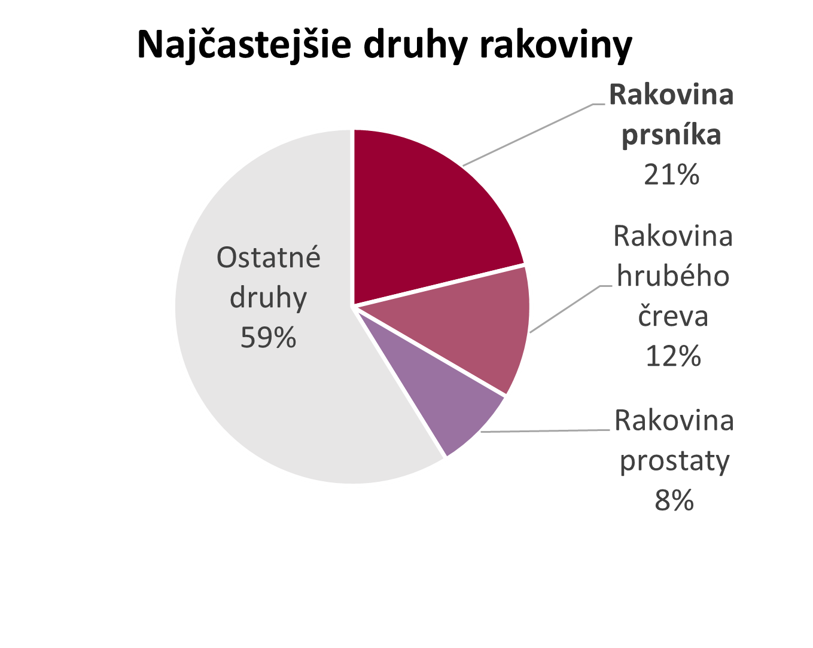
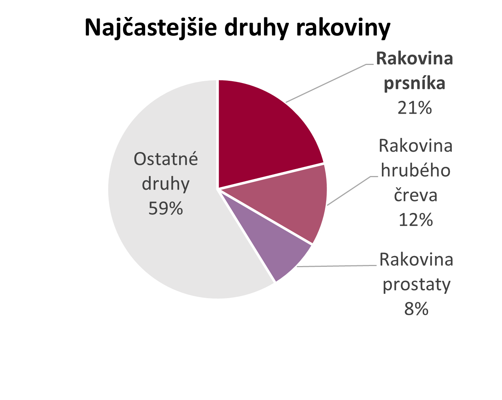
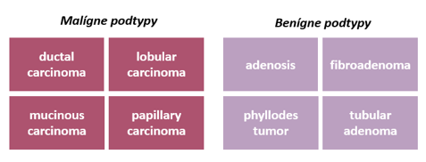
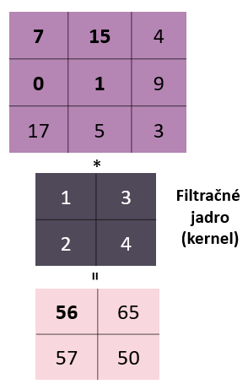
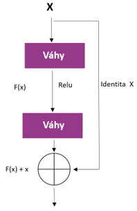
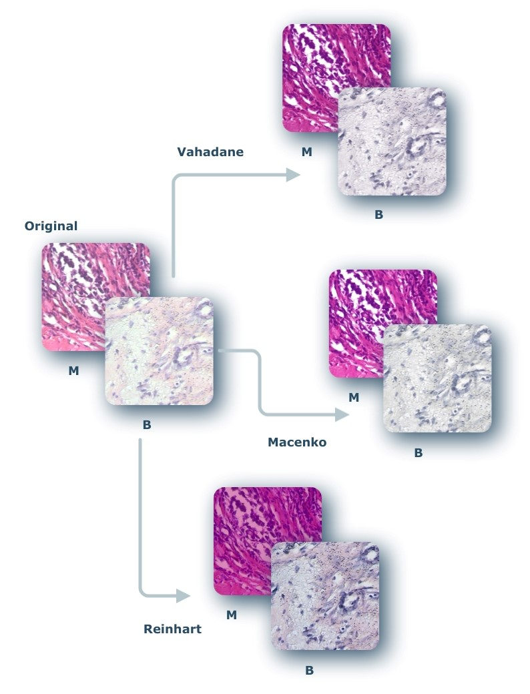
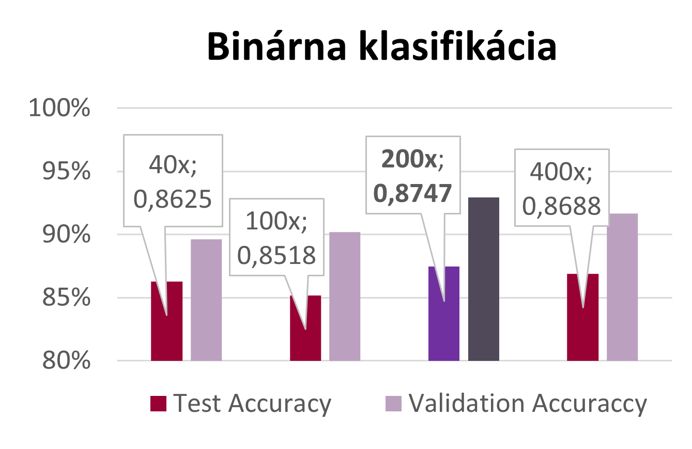
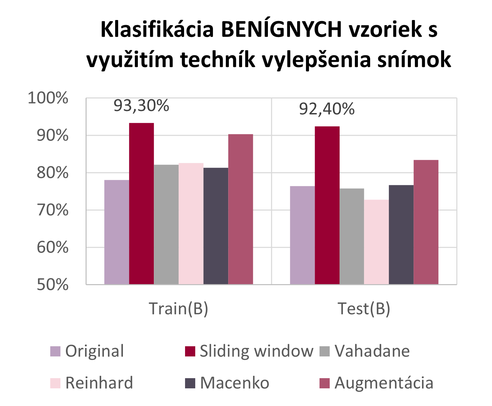
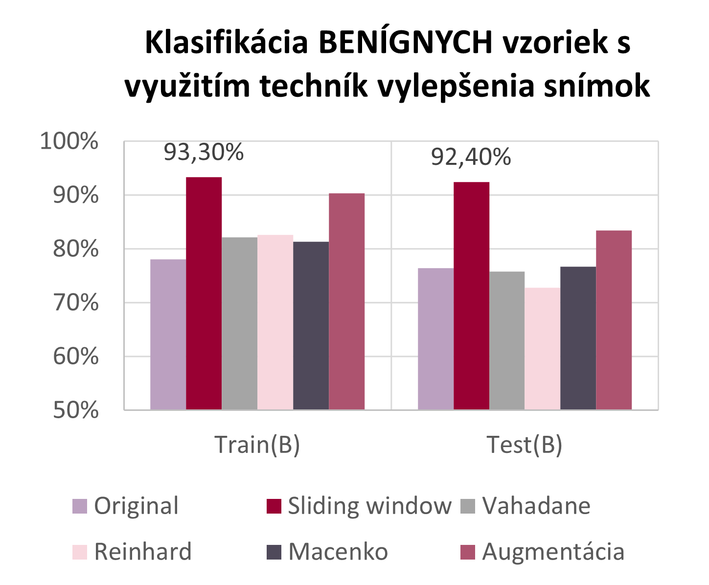

Fázy projektu
III : Trénovanie neurónových sietí
Na Google Colab boli trénované siete pre binárnu klasifikáciu i klasifikáciu podtypov
Motivácia
 

Problém
Výskumné otázky
Princípy neurónových sietí
- Klasifikačná neurónová sieť
- Regresná neurónová sieť

Implementovaná regresná sieť
viacvrstvové neurónové siete
-> vstupná vrstva + skryté
vrstvy + výstupná vrstva

Aktivačná funkcia
- výstup - identita
- ostatné - Sigmoidná funkcia (výstup 0 - 1)
LOSS funkcia
- MSE (Mean Squared Error)

Implementovaná klasifikačná sieť
klasifikačná sieť
- výstup 1 / 0
- posledná vrstva - pridaná sigmoidná funkcia

Derivácia sigmoidy:

LOSS funkcia
- Binary Cross Entropy

Derivácia Binary Cross Entropy:

Graf regresnej neurónovej siete
Graf 1 -> trénovanie, 150 epôch
Graf 2 -> vysoký learning rate -> pretrénovanie siete


Implementácia učenia
Učenie neurónovej siete - backpropagation algoritmus -> gradient
stratovej funkcie
- od poslednej vrstvy k prvej
Vzorec na výpočet:


Dáta

Súbor 7000 histopatologicých snímkov pacientiek s rakovinou prsníka
4 zväčšenia -> 40x / 100x / 200x / 400x
rozdelenie dát -> Benígne / Malígne -> každá skupina - 4 podtypy
Dataset obsahoval snímky od - 81 pacientov
- rozdelenie do 27 foldov
- každý fold -> 2xM a 1xB
Metodológia
Konvolučné neurónové siete

Najväčšie využitie -> spracovanie obrazových dát
Základná jednotka -> matematická operácia konvolúcie
- umožňuje zachytávať určité črty, ktoré abstrahujú kľúčové informácie pre finálnu predikciu
Namiesto neurónov - aktualizujú sa váhy filtračného jadra (kernelu)
ResNet
Model zahŕňa 152 vrstiev.
Dopredná konvolučná neurónová sieť, ktorá obsahuje reziduálny typ spojenia
- funkcia preskočenia určitých vrstiev
– zabraňuje sa stagnácii a urýchľuje proces učenia
Trénovanie hlbokých neurónové siete bez výskytu overfittingu
Transfer learning
Použitie natrénovaného modelu -> transormovaný na naše použitie (pridaním vlastných vrstiev)
Má potenciál výrazne zlepšiť efektívnosť na trénovaní nových modelov
Často slúži na extrakciu určitých vlastností, ktoré sú vstupom do vlastných nadefinovaných vrstiev
Základný model
Metodika trénovania
výsledky
Upgrady
Posuvné okno

Metóda zväčšovania počtu dát
Pomocou posuvného okna sa z jedného obrázka vytvárajú ďalšie
1 pôvodný obrázok -> 5 menších
Normalizácia
Metóda prispôsobenia vlastností základnej vzorky na celý súbor vzoriek
Snaha o odstránenie veľkých odlišností v celom súbore
Použité metódy: Vahadane, Macenko, Reinhard

Augmentácia
Metóda znásobenia počtu vzoriek
Možné použitie namiesto normalizácie
Použitie kontrastu, zmena jasu, pridanie šumu, horizontálne/vertikálne otočenie...
Výsledky

Klasifikácia snímok do 2 tried - BENÍGNE a MALÍGNE
Pre každé zväčšenie pre dôkaz úspešnosti - 27 - násobná validácia
tzn. rozdelenie dát do 26 trénovacích a 1 testovaciu skupinu
Použitá metóda early stopping -> zabránenie pretrénovaniu modelu
Najlepšie výsledky - 200x zväčšenie
Trénovanie -> 170 hodín
 

Na vzorkách s najlepším zväčšením pri
binárnej
klasifikácii sa
vykonávali klasifikácie podtypov malígnych i benígnych vzoriek
Najlepšie výsledky - pomocou techniky
posuvného
okna
Vykonávali sa experimenty s použitím techník
vylepšenia snímok
Trénovanie 30 sietí pre určovanie podtypov
->
250 hodín
Sumarizácia
Budúca práca
- Aplikácia implementovaných modelov na medicínskych dátach: detekovanie nukleotidového polymorfizmu pri rakovine prostaty
- Porovnanie komplexnosti a úspešnosti na reálnych dátach medzi našimi modelmi: MARS, SVM & NN
- Pokročilá implementácia NN v aplikačných rámcoch Tensorflow, Pytorch.. a prezentácia reálnych výsledkov na reálnych dátach za účelom podpory detekcie a rozhodovania v medicíne